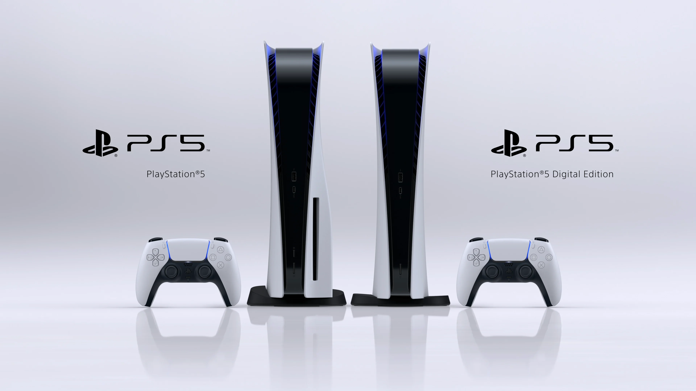
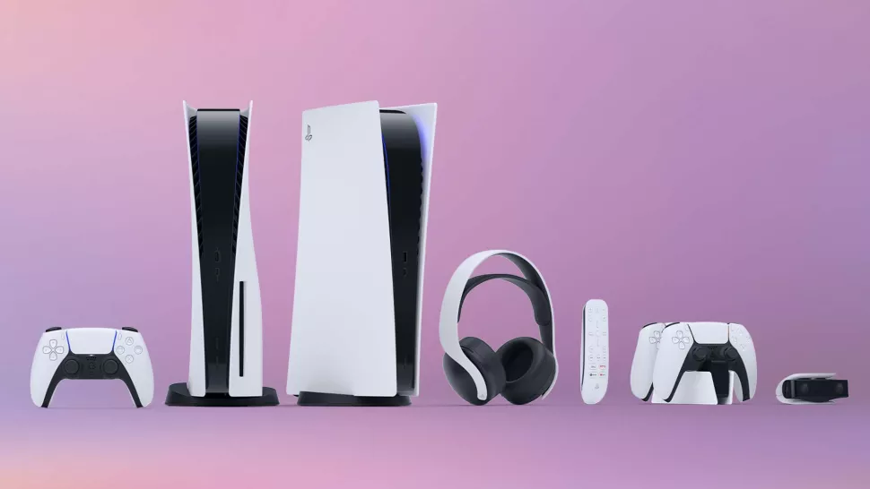
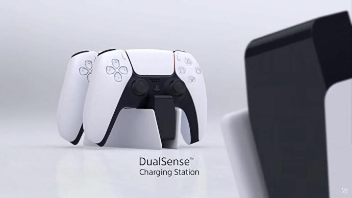
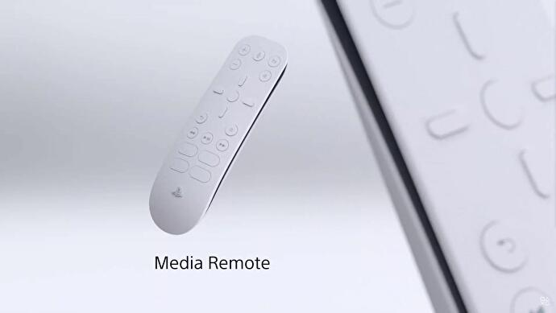
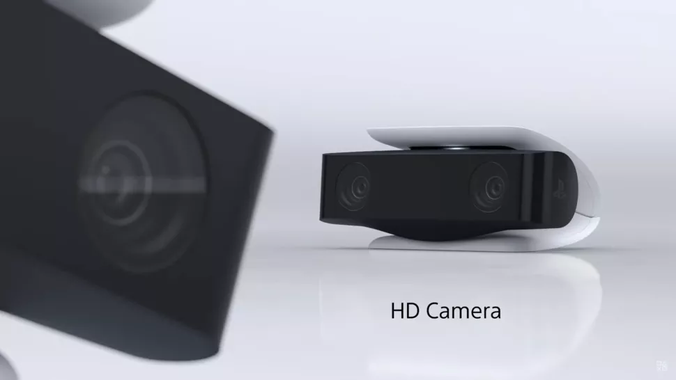
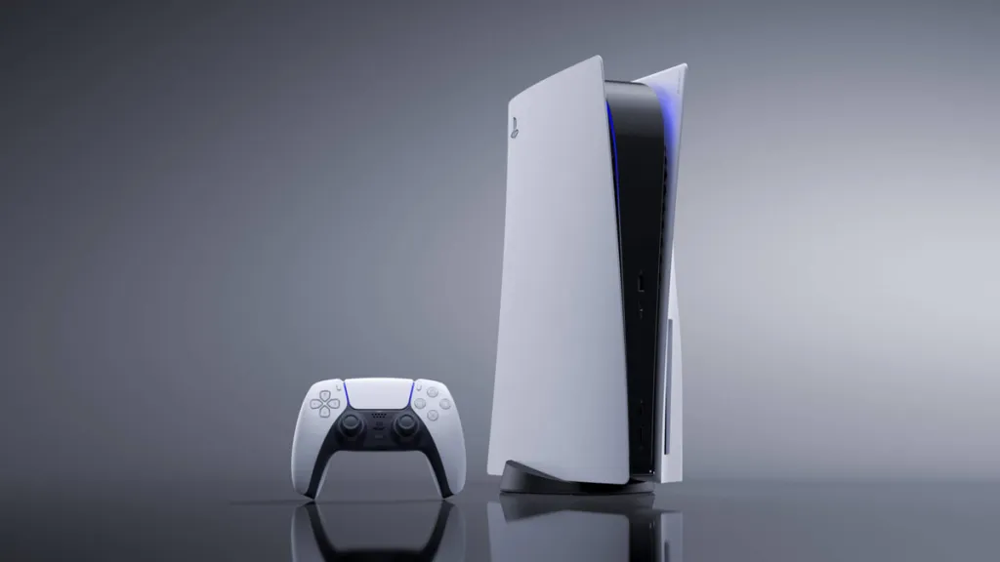

Welcome to the immersive realm of PS5 gaming, where innovation meets entertainment to redefine the boundaries of interactive experiences. In this dedicated section, we showcase a curated selection of visually stunning and emotionally engaging games that exploit the cutting-edge technology of the PlayStation 5. From epic AAA titles to captivating indie gems, each game is meticulously crafted to leverage the console's powerful processing unit, advanced graphics capabilities, and rapid storage solutions. Step into a world where every detail is brought to life, and the boundaries between reality and virtuality blur, as the PS5 delivers a gaming experience like never before.
Explore the extraordinary lineup of PS5 games below, each a testament to the console's commitment to pushing the boundaries of what's possible in gaming. The carefully chosen titles not only showcase the console's technical prowess but also highlight the diverse and captivating narratives that make PS5 gaming an unparalleled adventure. Scroll down to discover a visual feast of gaming excellence, where each image provides a glimpse into the thrilling worlds waiting to be explored on your PlayStation 5.
What is your favorite PS5 game?
SPECIFICATIONS

The PS5 console is predominately white and features some quite sleek curved
surfaces. With black slopes in the middle section where the components are
held. It has some cooling ventilation on the edges and some blue lights
which accent the edges of the box, giving the PS5 a stealthy look. On the
front of the console are USB-A and USB-C.
While this is what the PS5 hardware looks like, what abou the inside? Here
are the specs of the PS5 console:
Component
Specification
CPU
x86-64-AMD Ryzen Zen 8 Cores / 16 Threads at 3.5GHz
GPU
Ray Tracing Acceleration up to 2.23 GHz (10.3 TFLOPS)
Memory
16GB GDDR6/256-bit
Internal Storage
Custom 825GB SSD
Optical Drive
4K UHD Blu-ray
External Storage
USB HDD Support
Connectivity
802.11ax Wi-Fi 6, Bluetooth 5.1
Audio
Dolby Atmos
Video Output
4K UHD, 8K
Dimensions
390mm x 104mm x 260mm
Weight
4.5kg
ACCESSORIES

The latest PlayStation generation brings with it all-new PS5 accessories
that can make your gaming experience even better. There are several official
and third-party options which add convenient extras, ike a camera for streaming,
enhanced audio via its proprietary headset, a handy controller charging dock
and more. Here are lists of PS5 accessories that you can buy today:
DualSense™ Charging Station

A charging station is a must if you're sick of having unsightly cables hanging
from the front or back of your PS5. Fear not, though, because the DualSense
Charging Station will fix this, as it offers a dedicated place to charge your
controllers. This official charging station matches the PS5 console's and
DualSense controller's bold two-tone design.
It should minimize the chance of you tripping on a loose cable and give your
setup a more aesthetically pleasing look. By keeping your controllers docked,
you can be sure that as soon as they're fully charged, you'll be ready for some
more gaming goodness in no time. Just be prepared to charge them up often, the
DualSense doesn't have the longest battery life.
Pulse 3D™ Wireless Headset
The Pulse 3D Wireless headset is an evolution of the Sony Platinum Wireless
headphones and is possibly one of the best ways to utilize the new 3D audio
tech feature that the PS5 has to offer. This headset contains dual
noise-cancelling microphones, allowing clear communication during multiplayer
sessions. It's a good one for anyone looking for a headset to get their PS5
journey off to a flying start.
It is, naturally, compatible with PS5 and also shares a similar aesthetic to
ensure they always look good together. The Pulse 3D doesn't cost as much as
the SteelSeries headset above, so you're getting something of a saving compared
to other models. 3D audio support should help elevate your gaming experiences
to a whole new level.
Media Remote

A controller can be a faff to use when you just want to watch a movie or TV
show. It's very easy to rest it on a table and accidentally hit the shoulder
buttons, messing up your viewing by accidentally fast forwarding or otherwise.
So, the PS5 media remote is a great accessory if you want something that's
built for the sole purpose of browsing through your streaming services.
With its dedicated buttons for many popular streaming services including
Netflix, Disney Plus, YouTube and Spotify, the media remote should prove to
be a great addition to any PS5 setup. It also means you won't be drain your
controller battery faster than necessary, either.
HD Camera

If you're unsure about what the PS5 HD Camera accessory does, we've got you
covered. It's great if you stream your games, or are someone who just loves
to share and broadcast their gameplay. It's not seen much integration directly
into games yet like the PS4 camera, but this could always change in the future.
The HD camera has had a cool, funky design upgrade from the PlayStation 4 Camera
and it's main purpose is so you can add yourself to your streams or gameplay
clips. It also has an adjustable stand and can be attached to the top of your
TV or elsewhere.
ABOUT

The PlayStation 5 (PS5) is a home video game console developed by Sony Interactive
Entertainment. Announced in 2019 as the successor to the PlayStation 4, the PS5
was released on November 12, 2020, in Australia, Japan, New Zealand, North America,
and South Korea, with worldwide release following a week later. The PS5 is part of
the ninth generation of video game consoles, along with Microsoft's Xbox Series X
and Series S consoles, which were released in the same month.
History
PlayStation (1994)
PlayStation (1994)
PS One (2000)
PlayStation 2 (2000)
PlayStation 2 Slim (2004)
PlayStation Portable (2004)
PlayStation 3 (2006)
PlayStation 3 Slim (2009)
PlayStation Vita (2011)
PlayStation 3 Super Slim (2012)
PlayStation 4 (2013)
PlayStation 4 Slim (2016)
PlayStation 4 Pro (2016)
PlayStation Classic (2018)
PlayStation 5 (2020)
Design
The base model includes an optical disc drive compatible with Ultra HD Blu-ray
discs. The Digital Edition lacks this drive, allowing it to serve as a
lower-cost model for those who prefer to buy games through digital download.
The two variants were launched simultaneously.